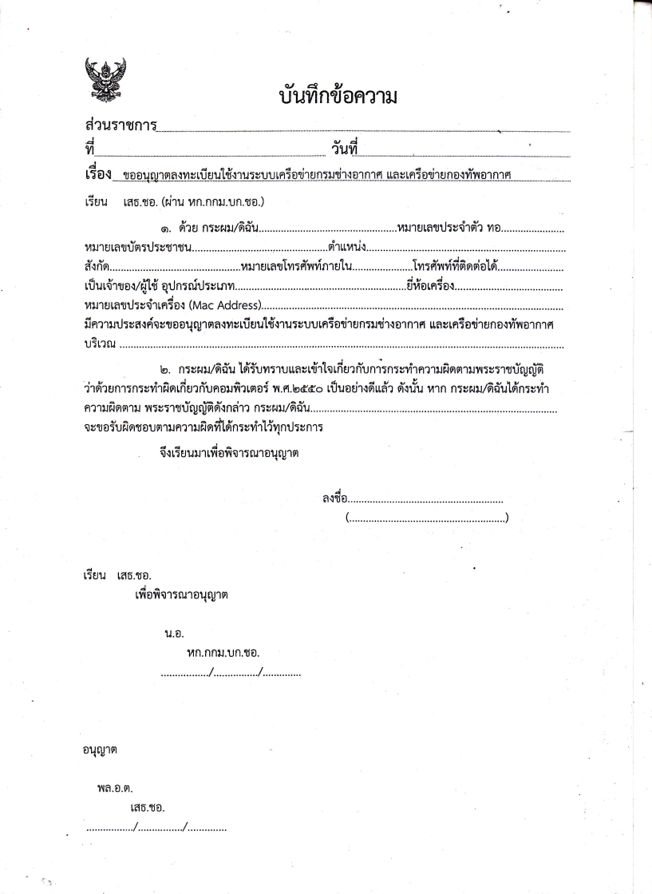

โหมดเจ้าหน้าที่ IT: คุณสามารถแก้ไข อัปเดตงานซ่อม หรือจัดการบุคลากรได้โดยตรงในส่วนที่เกี่ยวข้อง
ศูนย์บริการงานไอที
เลือกบริการที่ต้องการดำเนินการ
แจ้งปัญหาอุปกรณ์ หรือจัดทำใบขอลงทะเบียนใช้งานเครือข่ายได้จากหน้านี้
ข้อมูลในใบลงทะเบียนอินเทอร์เน็ตบันทึกเป็นร่างเฉพาะในเบราว์เซอร์เครื่องนี้ และจะไม่ถูกส่งขึ้นฐานข้อมูล
งานบริการเครือข่าย
ใบแจ้งลงทะเบียนอินเทอร์เน็ต
กรอกข้อมูลให้ครบ ตรวจสอบตัวอย่าง แล้วกดพิมพ์ใบลงทะเบียน
ตรวจสอบใบลงทะเบียนก่อนพิมพ์
ตรวจสอบข้อมูลในเอกสารด้านล่าง แล้วกด “พิมพ์เอกสาร”
หากหน้าต่างพิมพ์ไม่เปิด ให้กด Ctrl + P หรือเลือกเมนูพิมพ์ของเบราว์เซอร์
ใช้ใบต้นฉบับที่แนบมาเป็นแม่แบบโดยตรง ข้อมูลที่กรอกจะวางลงในช่องว่างของเอกสาร
งานบริการซ่อม
ระบบแจ้งซ่อมอุปกรณ์ไอที
รอรับเรื่อง
0
กำลังซ่อม
0
เสร็จแล้ว
0
เร่งด่วน
0
ระบบแจ้งซ่อมคอมพิวเตอร์ภายในหน่วยงาน
พบ 0 รายการไม่พบรายการแจ้งซ่อม
ลองเปลี่ยนคำค้นหา หรือกรองสถานะใหม่อีกครั้ง
รายงานประจำปี
สรุปผลการให้บริการงานซ่อมอุปกรณ์ไอที
ข้อมูลสรุปประจำปี
ใบงานทั้งหมด
0
รายการ
ซ่อมเสร็จแล้ว
0
คิดเป็น 0%
งานที่ยังเปิดอยู่
0
รอรับเรื่องและกำลังซ่อม
งานเร่งด่วน
0
รายการตลอดปี
วิเคราะห์ข้อมูลและสถิติงานซ่อม (IT Analytics Dashboard)
สัดส่วนสถานะงานซ่อม
เคสซ่อมแยกตามประเภทอุปกรณ์
งานซ่อมเฉลี่ยตามแผนก
สรุปผลแยกตามเดือน
| เดือน | ทั้งหมด | รอรับเรื่อง | กำลังซ่อม | เสร็จแล้ว | เร่งด่วน | อัตราปิดงาน |
|---|
รายชื่อช่างและภาระงาน (IT Technicians & Workload)
ลงชื่อ ................................................ ผู้จัดทำรายงาน
ลงชื่อ ................................................ ผู้ตรวจสอบ